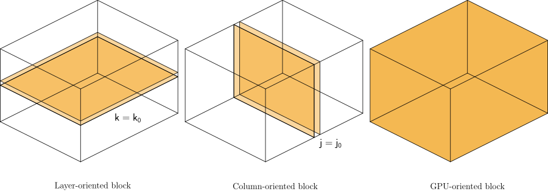
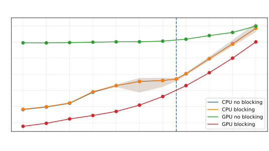
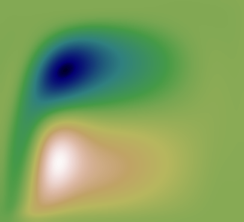
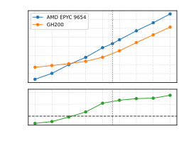
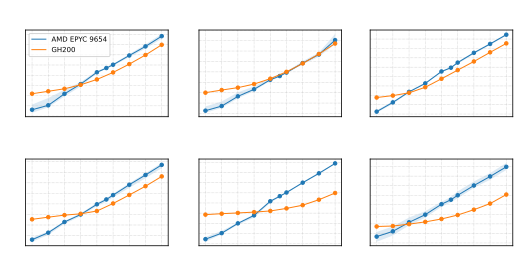
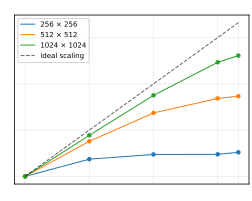
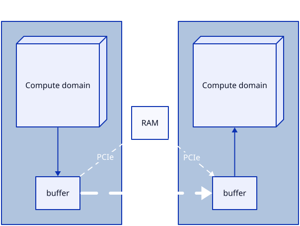
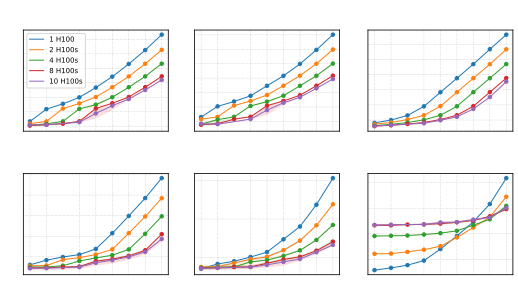

WACCPD 2026
Performance-portable MOM6 on GPUs
Standard Fortran and OpenMP
[0:00–0:30] Our question is whether a long-lived community ocean
model can gain GPU acceleration without a separate implementation or
changes to its validated answers. We use standard Fortran to express
the parallel work and OpenMP to keep its data on the device. This
talk focuses on the dynamic core, not a completed port of the entire
production model.
Acceleration without disruption
MOM6 is a community and operational ocean model.
Preserve One Fortran codebase for CPU and GPU
Verify Retain validated, bitwise-identical answers
Perform Gain GPU speed without losing CPU performance
Port the model, not just an isolated kernel.
[0:30–1:30] MOM6 supports ongoing scientific research and operational
applications. A replacement GPU implementation would create a second
code to maintain and validate. Changing answers is also disruptive: we
need to distinguish scientific changes from porting errors. CPU
execution remains important, so a successful port must preserve that
path and its performance. The approach is deliberately incremental,
retaining the model's development practices rather than introducing a
new language or framework.
Different solvers, different dependencies
Layered Advection, horizontal viscosity
Horizontal work over layers
Columnar Vertical friction
Independent columns; ordered vertical work
Mixed Pressure, continuity, barotropic
Stencils, sums, and coupling
No universal loop shape fits the dynamic core.
[1:30–2:30] The dynamic core advances velocities and layer
thicknesses. We classify its computations by dependency, not by the
physical equation. Layered work offers horizontal concurrency and
sometimes concurrency across layers. A column solve has horizontal
independence but ordered work down each column. Mixed solvers combine
these patterns: pressure depends on overlying layers, and the barotropic
mode couples a two-dimensional solve to vertically integrated state.
This taxonomy tells us how to expose work; later we will see why it does
not predict speedup by itself.
Fortran describes independent work
do concurrent (k=1:nk, j=1:nj, i=1:ni)
a(i,j,k) = b(i,j,k) + c(i,j,k)
enddoSource: iteration independence
Compiler: CPU execution or GPU kernel mapping
OpenMP: device-data residency
do concurrent does not itself require GPU execution.
[2:30–3:30] The loop is standard Fortran, not a GPU-specific
directive. It states that these iterations may execute in any order. The
compiler and build configuration decide how to execute them. NVIDIA maps
these loops through its OpenACC machinery; other vendors have their own
implementations. The source expresses the algorithmic independence while
the compiler chooses launch details. But this is not a complete
accelerator programming model: Fortran does not prescribe host-device
transfers, and procedure calls and temporary storage still affect
whether a useful kernel can be generated.
Keep the data on the device
! Establish residency
!$omp target enter data map(alloc: a) map(to: b, c)
do concurrent (k=1:nk, j=1:nj, i=1:ni)
a(i,j,k) = b(i,j,k) + c(i,j,k)
enddo
! Return the result when needed
!$omp target exit data map(from: a) map(delete: b, c)In MOM6, persistent fields stay resident across
kernels .
[3:30–4:30] This is a compact illustration of the data lifecycle, not
a prescription to copy fields around every kernel. Real model timesteps
contain thousands of kernels, so those transfers would be devastating.
Persistent fields are mapped during initialization and retained on the
GPU. Modules manage their own temporary storage. OpenMP-managed arrays
must be visible to kernels generated from do concurrent:
interoperability is an explicit toolchain requirement. Derived types
require care as well: mapping the object and its array components is one
coordinated lifetime problem.
Parallel horizontally, ordered vertically
do concurrent (j=js:je)
do k=1,nz
do concurrent (i=is-1:ie)
uhbt(i,j) = uhbt(i,j) + uh0(i,j,k)
enddo
enddo
enddo
Independent horizontal columns
Ordered vertical accumulation
CPU-friendly j-k-i traversal
[4:30–5:30] Flattening everything into one concurrent loop would be
wrong here. Each horizontal column is independent, but its sum must
follow the validated vertical order. Nested concurrency expresses that
distinction without discarding the contiguous i-loop important to CPU
execution. For this pattern NVIDIA can produce 32 by 4 thread blocks in
the horizontal plane while keeping the k accumulation serial. That
geometry is a compiler implementation detail, not a promise of the
Fortran standard. Source loop hierarchy is both a correctness decision
and a performance decision.
Blocking reconciles CPU and GPU

CPU: retain locality. GPU: expose larger work units.
Runtime block extents — same solver, same module API.
[5:30–6:30] Nested loops alone do not solve every mapping problem.
Larger solvers contain multiple phases and helper calls that can obscure
the useful parallel structure. Explicit computational blocks keep
ordinary control flow outside compact kernels and bound temporary
storage. The same source can use smaller or anisotropic blocks for CPU
locality and larger horizontal blocks for GPU concurrency. These are
algorithmic tiles, not necessarily CUDA thread blocks. The key is to
make execution geometry a configuration choice rather than maintain
separate solver implementations. Wrappers retain the existing module
API, so callers such as RK2 do not need to know about the decomposition.
Ordinary Fortran controls traversal; the inner kernel only sees regular,
block-local work.
Traverse blocks, launch local kernels
Outer loops select a tile; do concurrent expresses its
independent work.
[6:30–7:00] The animation makes the two levels concrete. Ordinary
outer loops choose an 8 by 4 tile in this illustrative 32 by 32 domain.
Within each tile we reconstruct global indices from block-local indices
and run compact kernels. The moving point illustrates index coverage,
not serial GPU execution: do concurrent iterations need not follow this
scan order. This is computational tiling, not a prescribed GPU
thread-block shape. Do not wait for the entire animation cycle.
Blocking changes the GPU outcome

CPU curves nearly overlap; GPU time drops with blocking.
[7:00–7:45] This earlier development comparison isolates the effect
of blocking in Coriolis and momentum advection. The blue and orange CPU
curves nearly overlap. The green GPU curve without blocking is much
higher than the red blocked curve. That is the practical motivation:
expose enough useful work to the device without penalizing the CPU path.
The vertical axis is module time per step in milliseconds, not speedup;
the horizontal axis is area relative to the older 32 by 32 base domain.
This plot comes from the September developer talk, not the manuscript's
GH200 sweep. Do not combine its timings or infer identical hardware,
compiler settings, or statistical definitions without checking the
original experiment. Use it as the qualitative before/after
illustration; the following paper results establish the current measured
performance.
Benchmark: the double gyre

Dynamic-core-focused configuration
64 × 64 to 1024 × 1024; 100 levels
One 96-core EPYC 9654 socket vs one GH200 GPU
Wall-clock time per completed model step
Fixed resources, increasing problem size — not weak
scaling .
[8:45–9:30] The double gyre is an idealized wind-driven basin whose
cost is dominated by the dynamic core. The comparison uses natural
resource units, one CPU socket and one GPU, rather than an ambiguous
node comparison. CPU performance uses Intel oneAPI 25.2 and
reproducibility-oriented flags; GPU performance uses NVIDIA HPC SDK
26.3. This is not the same compiler comparison used for bitwise
validation. We report wall-clock time per completed step because the
model timestep varies with resolution. The plot uses horizontal area
relative to 64 by 64: 256 times the area is 1024 by 1024, and every case
has 100 vertical levels.
Nearly 3× with enough work

Small domains favor CPU; larger domains amortize GPU overhead.
[9:30–10:45] The top panel shows time per step; the bottom shows CPU
time divided by GPU time. Small cases provide insufficient work to keep
the GPU occupied and amortize fixed launch costs. As the horizontal
domain grows, the GPU overtakes the CPU and approaches three times the
performance at the largest size. The dotted vertical line marks the
representative 384 by 256 by 100 production layout. This is a main-loop
result for a dynamic-core-focused benchmark, not a claim about the
throughput of a full coupled climate model. It is also less than a pure
memory-bandwidth ratio might suggest; the integrated solver includes
ordered work, temporaries, reductions, communication, and compiler
overheads.
Structure guides porting, not speedup

Largest-domain speedups: viscosity ~1.2×; pressure/barotropic
~7.4–7.5×.
[10:45–12:00] Do not walk through every panel. Contrast horizontal
viscosity, a seemingly favorable layered solver with only about 1.2
times speedup, with the mixed pressure and barotropic components
reaching about 7.4 and 7.5 times. Vertical friction retains serial
column work yet reaches about twice CPU performance. Advection reaches
about 1.8 times and continuity about 2.4 times. The dependency taxonomy
is useful for deciding which loops may be concurrent and which must
remain ordered, but realized performance also depends on memory access,
private storage, launch counts, reductions, and the compiler. Integrated
speedup is determined by the remaining costs, not an average of these
module speedups. The figure is regenerated from the manuscript logs; its
range title now matches the plotted sweep and the 64 by 64 reference
grid.
The resident model extends across GPUs

Up to 6.1× on 10 H100s , relative to one H100.
[12:00–13:15] This reproduces the manuscript's fixed-domain
strong-scaling view using H100s rather than the GH200 of the
single-device comparison. The horizontal axis is GPU count; each curve
fixes the global domain. Speedup is relative to one H100 for that same
domain. The dashed line denotes ideal scaling. Two GPUs per node, up to
five nodes. FMS packs and unpacks resident halo buffers on the GPU and
passes device pointers to GPU-aware MPI. The largest domain reaches
about 6.1 times speedup at ten GPUs; the smallest reaches only about 1.4
times as local work shrinks and communication dominates. Importantly,
GPU-aware MPI does not imply a direct GPU transport: this system lacks
NVLink and GPUDirect RDMA, and communication is staged through host
memory and PCIe over NDR-200 InfiniBand. The result demonstrates the
distributed data-resident implementation, not ideal scaling or a
hardware-independent communication limit. Rank/device selection uses an
OpenACC runtime call in the NVIDIA implementation.
Standards-based, not limitation-free
Private work arrays OpenMP target-loop fallback for column solvers
Procedure calls Inlining and register pressure matter
Objects / descriptors Host-side dispatch; careful component lifetimes
Runtime control NVIDIA device selection uses OpenACC; async is outside Fortran
Portable source does not yet mean validated performance on every
vendor.
[13:15–14:00] The approach is pragmatic: do concurrent is the primary
notation, but current compiler limitations require fallbacks. Vertical
friction uses OpenMP where private local arrays are not reliably
supported. Some procedures were manually inlined for this compiler
release. Objects remain useful on the host, but device kernels prefer
statically resolved calls and explicit array state. Asynchronous
execution is a future opportunity, not a measured feature here. Our
portability claim is about a standards-based single source strategy;
these GPU measurements are NVIDIA results, not a completed cross-vendor
performance evaluation.
One codebase, solver-aware acceleration
Express independence with standard Fortran.
Manage residency and communication explicitly.
Preserve ordering, validated answers, and the CPU
path.
Nearly 3× single-GPU main-loop speedup;
6.1× fixed-domain speedup on ten GPUs in the largest
test.
Next: diagnostics, parameterizations, and coupled configurations.
[14:00–14:30] The main conclusion is that production-model
acceleration is not a single-loop transformation. Standard Fortran
supplies the central expression of concurrency, but residency, ordered
work, blocking, compiler behavior, and validation make the whole model
viable. The dynamic core demonstrates acceleration without maintaining a
second solver source. Extending this to diagnostics and more complex
parameterizations is the next step toward coupled production
configurations. Thank the collaborators and invite questions. Planned
spoken content is 14 minutes 30 seconds, leaving 30 seconds within a
15-minute slot. If questions must fit inside the slot, omit the
traversal animation and compress the module breakdown.
Backup: representative block kernel
do jsb=js,je,njj ; do isb=is,ie,nii
ieb = min(isb + nii - 1, ie)
jeb = min(jsb + njj - 1, je)
iie = ieb - isb + 1
jje = jeb - jsb + 1
do concurrent (k=1:nz, jj=1:jje, ii=1:iie)
i = isb + ii - 1
j = jsb + jj - 1
visc_rem(ii,jj,k) = visc_rem_u(i,j,k)
enddo
enddo ; enddoClip edge tiles; use local work arrays and global field indices.
Backup only. This is the representative continuity block kernel from
the manuscript and September developer talk, not an entire solver. nii
and njj are configured tile extents; iie and jje are the clipped extents
of this tile. ii and jj index temporary, block-local arrays. i and j
address the full-domain fields. The serial outer traversal is
deliberately kept separate from the compact concurrent kernel. The
developer talk also distinguishes center and face bounds; Fortran is
case-insensitive, so capitalization alone does not create distinct
variable names.
Backup: configuration without API changes
subroutine CorAdCalc(...)
nkk = CS%nkblock
if (nkk == 0) nkk = GV%ke
call CorAdCalc_block(..., nkk, ...)
end subroutine CorAdCalc
CONTINUITY_NIBLOCK / NJBLOCKHorizontal block extents
CONTINUITY_NKBLOCKReconstruction layers
CORIOLIS_ADV_NKBLOCKAdvection layers
HORVISC_NKBLOCKViscosity layers
0 selects the full local extent in that direction.
Backup only. These are layout parameters shown in the September
developer talk. The first table row abbreviates two full parameter
names: CONTINUITY_NIBLOCK and CONTINUITY_NJBLOCK. Wrappers resolve the
configured extent before calling the block implementation, preserving
the existing module interface. Callers do not need separate CPU/GPU
APIs. The code is schematic; ellipses stand for the original argument
list.
Backup: device-resident halo exchange

GPU packing → device buffers → GPU-aware MPI → GPU unpacking
The transport beneath MPI remains system-dependent.
Backup only. The OpenACC runtime reconciles the device ID used by
NVIDIA-generated kernels with the MPI rank's assigned device. Device
pointers can be handed to MPI even when the MPI implementation stages
the transfer through host memory. This is why GPU-aware and GPU-direct
must not be used interchangeably.
Backup: module-level H100 timings

Barotropic stepping includes communication in its timed region.
Backup only. The horizontal axis is global domain area, and each
curve represents a fixed GPU count. Compare times at the same x value to
assess the effect of adding GPUs for a fixed domain. Barotropic stepping
includes internal communication in its timed region. These are raw
time-per-step curves, not speedup panels; a dedicated speedup view is
deferred.
Backup: derived-type lifetimes
!$omp target enter data map(to: CS)
!$omp target enter data map(to: CS%u, CS%v)
! Later host-side changes need coordinated updates.
! Blindly updating CS can overwrite device references:
!$omp target update to(CS)Treat object and component mappings as one residency problem.
Backup only. The final line illustrates a hazard, not a recommended
operation. Initial mappings are compact; subsequent updates can
overwrite device-side descriptors or pointers. Object lifetimes,
component allocation, and host updates must be coordinated. Exact
behavior and safe update patterns depend on the compiler and the derived
type's definition.
Backup: acknowledgments
Pranay Reddy Kommera (NVIDIA): discussions motivating the blocking
technique
ACCESS-NRI: supported by the Australian Government's NCRIS
NCI Australia: computational resources and services
The MOM6 community and consortium
Backup only. Acknowledgments follow the manuscript. The full
manuscript title is “Towards Performance-Portable GPU Acceleration of
MOM6 with Standard Fortran and OpenMP.”